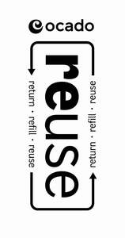
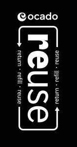

Trade Mark Journal No.2025/025 20 June 2025
UK00004208281 23 May 2025 (3,21,29,30,31,32,33,39)
Mark 1

Mark 2

Mark 3
- Class 3
- Bleaching preparations and other substances for laundry use; cleaning, polishing, scouring and abrasive preparations; detergent, household bleach, disinfectant; room fragrancing preparations; stain removers; cosmetics, toiletries, sanitary preparations, deodorants for humans; soaps, creams, shower and bath gels; perfumery, essential oils, hair lotions; baby care products.
- Class 21
- Reuseable plastic containers; reuseable plastic bottles.
- Class 29
- Meat; fish and seafood; preserved, processed, cut, canned, dried, frozen and cooked meat and fish; meat extracts; meat substitutes; preserved, processed, peeled, cut, canned, dried, frozen and cooked fruits, fungi, pulses and vegetables; prepared meals; prepared salads; prepared puddings; soups and stocks; snack foods; processed nuts; preserves; spreads; dairy products; eggs, milk and milk products; cheese; cream; butter; yoghurt and dairy puddings; edible oils, edible fats.
- Class 30
- Beverages, coffee, tea, cocoa; baked goods, bread, cakes, biscuits; pastry, pies; confectionary; chocolate and chocolate products; desserts; sauces and condiments; salts, seasonings and flavouring; treacle; yeast, baking-powder; pasta and pasta dishes; rice and rice dishes; cereals; ice; ice cream; frozen yogurts and sorbets; prepared meals; sandwiches and wraps; snack foods; spices and dried herbs; sugars, sweeteners and bee products.
- Class 31
- Fresh fruits, fresh vegetables; flowers; herbs, grains, nuts, seeds; foodstuff for pet animals.
- Class 32
- Beers, mineral and aerated waters, and other non-alcoholic drinks; flavoured carbonated beverages; tonic water; fruit and vegetable juices; fruit and vegetable drinks; soya-based drinks; other preparations for making beverages.
- Class 33
- Alcoholic beverages, wine, spirits, aperitifs, pre-mixed alcoholic beverages.
- Class 39
- Delivery of goods; distribution of goods; packaging and storage of goods; packaging of goods and arranging the collection of goods; refilling of containers; information, advisory and consultancy services relating to the sustainability, ecological and environmental impact of the aforesaid services including the provision of such services on line from a computer database or via the Internet or extranets or social media.
Ocado Innovation Limited
Representative: Daniel Mannion